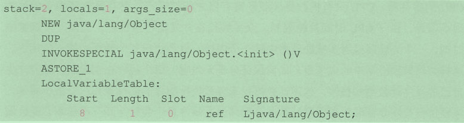
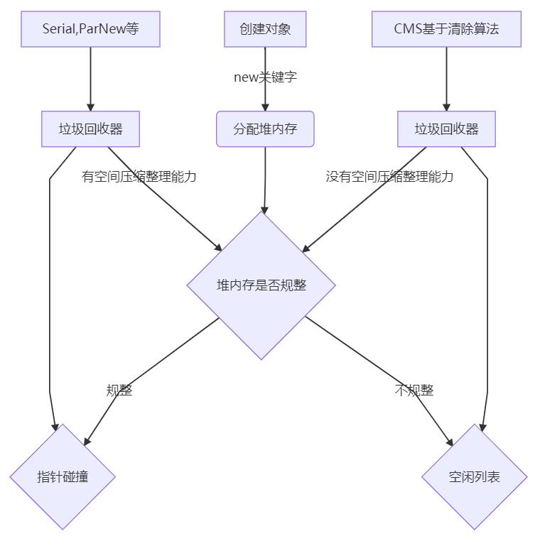
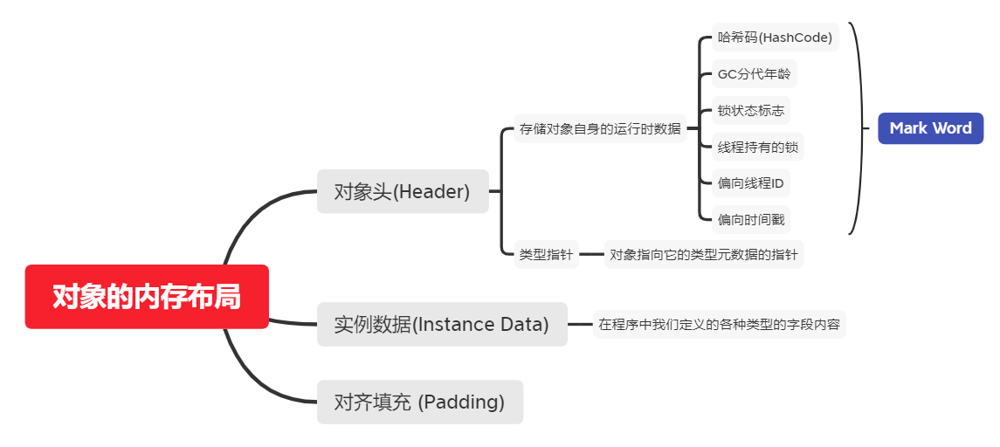
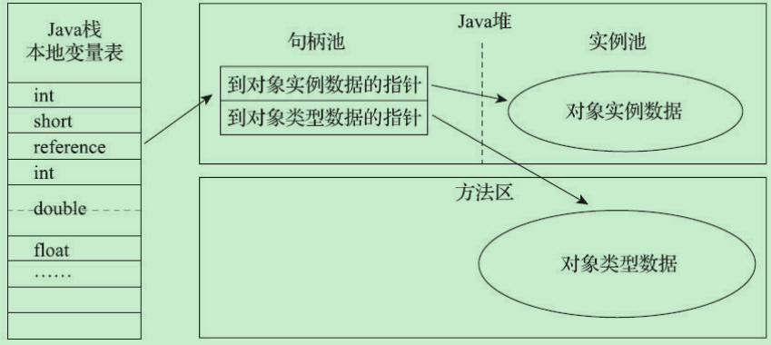
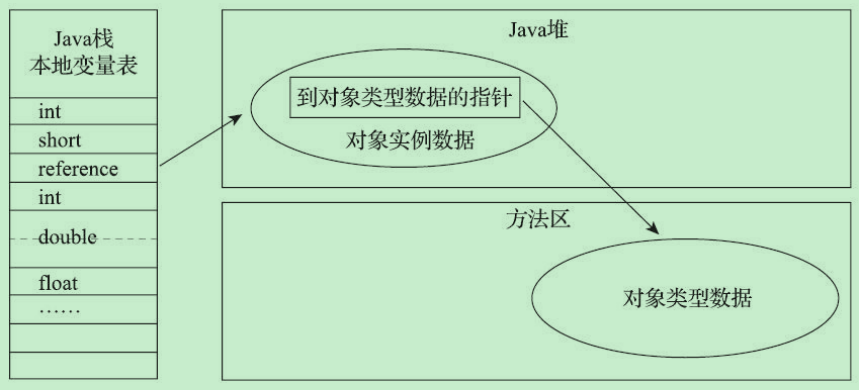

JVM-2-对象简述
对象实例化
Object ref = new Object();
当我们创建一个对象时，JVM进行了那些操作？
利用javap -verbose -p命令查看对象创建的字节码如下

NEW：如果找不到Class对象，则进行类加载。加载成功后则在堆分配内存，从Object开始到本类路径上的所有属性值都要分配内存。分配完毕后，进行零值初始化。在分配过程中，注意引用是占据存储空间的，它是一个变量，占用4个字节。这个指令完毕后，将指向实例对象的引用变量压入虚拟机栈顶。
DUP：在栈顶复制该引用变量，这时的栈顶有两个指向堆类实例对象的引用变量。如果
方法有参数，还需要把参数压入操作栈中。两个引用变量的目的不同，其中压至底下的引用用于赋值，或者保存到局部变量表，另一个栈顶的引用变量作为句柄调用相关方法。 INVOKESPECIAL：调用对象实例方法，通过栈顶的引用变量调用
方法。 是类初始化时执行的方法，而 是对象初始化时执行的方法。
2、从执行步骤的角度分析：
- 确认类元信息是否存在。当JVM接收到new指令时，首先在元空间内检查需要创建的类元信息是否存在。若不存在，那么在双亲委派模式下，使用当前类加载器查找对应的.class文件。如果没有找到文件，则抛出ClassNotFoundException异常；如果找到则进行类加载，并生成对应的Class类对象。
- 分配对象内存。首先计算对象占用空间大小，如果实例成员变量是引用变量，仅分配引用变量空间即可，即4个字节大小，接着在堆中划分一块内存给新对象。在分配内存空间时，需要进行同步操作，比如采用CAS(Compare And Swap)失败重试、区域加锁等方式保证分配操作的原子性。
- 设定默认值。成员变量值都需要设定默认值，即各种不同形式的零值。
- 设置对象头。设置新对象的哈希值、GC信息、锁信息、对象所属的类元信息等。这个过程的具体设置方式取决于JVM实现。
- 执行init方法。初始化成员变量，执行实例化代码块，执行实例化代码块，调用类的构造方法，并把堆内对象的首地址赋值给引用变量。
对象创建
代码层面
在Java中我们创建对象通常只是用new关键字，例如Object obj = new Object()，创建一个Object对象。
虚拟机层面
在Java虚拟机遇到一条字节码new指令时，首先将去检查这个指令的参数是否在常量池中定位到一个类的符号引用，并且检查这个符号引用代表的类是否已被加载、解析和初始化过。如果没有，那必须先执行相应的类加载过程。
在类加载检查通过后，接下来虚拟机将为新生对象分配内存。对象所需内存的大小在类加载完成后便可以确定，为对象分配空间的任务实际上便等同于把一块确定大小的内存块从Java堆中划分出来。
指针碰撞
假设Java堆中内存是绝对规整的，所有被使用过的内存都被放在一边，空闲的内存被放在另一边，中间放着一个指针作为分界点的指示器，那所分配内存就仅仅是把指示器指针向空闲空间方向挪动一段于对象大小相等的距离，这种分配方式为“指针碰撞”。
空闲列表
如果Java堆中的内存并不是规整的，已被使用的内存和空闲的内存相互交错在一起，那就没办法简单地进行指针碰撞了，虚拟机就必须维护一个列表，记录哪块内存块是可用的，在分配的时候从列表中找到一块足够大的空间划分给对象实例，并更新列表记录，这种分配方式称为“空闲列表”。
内存分配方式准则
内存分配的方式由Java堆是否规整决定的，而Java堆是否规整又由所采用的垃圾收集器是否带有空间压缩整理的能力决定。Serial、ParNew等带压缩整理过程的收集器，采用指针碰撞，简单高效；当使用CMS这种基于清除算法的收集器，采用复杂的空间列表来分配内存。

由于虚拟机创建对象是一个非常频繁的行为，即使仅仅修改一个指针所指向的位置，在并发情况下也不是线程安全，为了解决并发下修改指针位置的非原子性操作。有两种方案可选：
对分配内存空间的动作进行同步处理
JVM采用CAS配上失败重试的方式保证更新指针操作的原子性
把分配内存的动作按照线程划分在不同的空间中进行
每个线程在Java堆中预先分配一小块内存，这个小内存块被称为本地线程分配缓冲(TLAB)，哪个线程要分配内存，就在哪个线程的本地缓冲区中分配，只有本地缓冲区用完了，分配新的缓冲区时才需要同步锁定。虚拟机是否使用TLAB，通过-XX:+/-UserTLAB参数来设定。
初始化内存
分配内存后，虚拟机必须将分配的内存(不包括对象头)都初始化为零值，如果使用了TLAB的话，这一项工作也可以提前至TLAB分配时顺便进行。这步操作保证了对象的实例字段在Java代码中可以不赋初始值就直接使用，使程序能访问到这些字段的数据类型所对应的零值。
对象的基本设置
经过上述步骤，虚拟机视角，对象已经产生，java代码视角，对象创建才开始到构造函数，即Class文件中的()方法还没执行，所有的字段都为默认的零值。new指令之后会接着执行()方法，按照程序员的意愿对对象进行初始化，这样一个真正可用的对象才算完全被构造出来。
对象的内存布局
在HotSpot虚拟机中，对象在堆内存的储存布局可以划分为三个部分：对象头(Header)、实例数据(Instance Data)和对齐填充(Padding)。

对象的访问定位
Java程序通过栈上的references数据来操作堆上的具体对象。由于reference类型只是一个指向对象的引用，并没有定义这个引用应该通过什么方式去定位、访问到堆中对象的具体位置，所以对象访问方式也是由虚拟机实现而定的，主流的访问方式主要有句柄和直接指针两种：
句柄
通过句柄访问对象

Java堆中划分出一块内存作为句柄池，reference中存储的就是对象的句柄地址，而句柄中包含了对象实例数据与类型数据各自具体的地址信息
直接指针
通过直接指针访问对象

Java堆中对象的内存布局就必须考虑如何放置访问类型数据的相关信息，reference中存储的直接就是对象地址，如果只是访问对象本身的话，就不需要多一次间接访问的开销
这两种对象访问方式各有优势
| 访问方式 | 优势 |
|---|---|
| 句柄 | 在对象被移动时只会改变句柄的实例数据指针，reference本身不需要被修改 |
| 直接指针 | 速度块，节省指针定位的时间开销 |